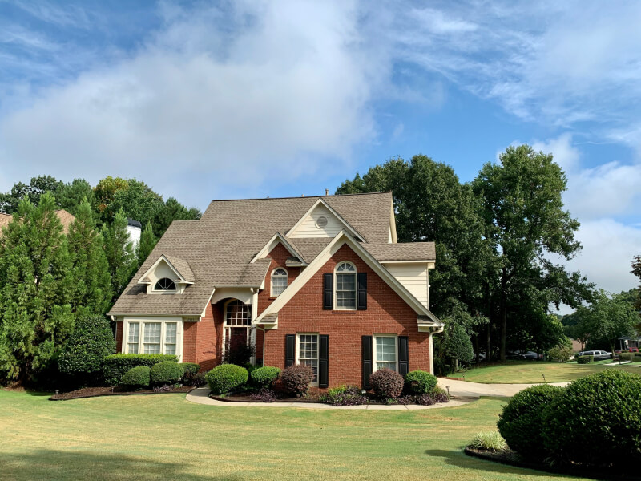
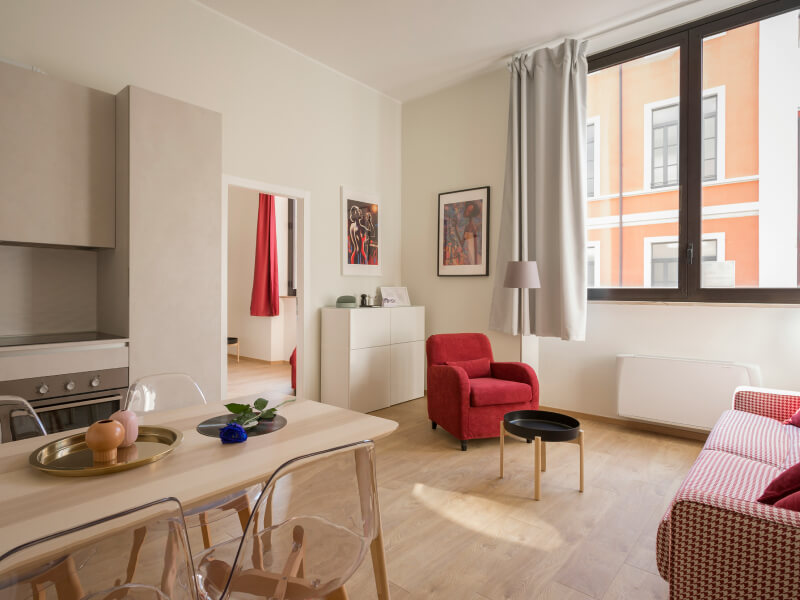
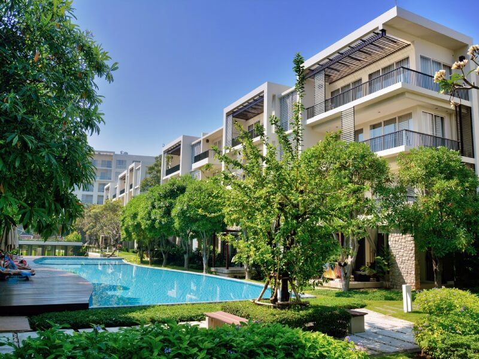

Identifying and clearing energetic imbalances to support a more peaceful living environment.
Have you ever been somewhere on land or in a dwelling and suddenly you felt off, or something isn’t quite right? There can be a number of reasons why this can happen.
Young children, cats, dogs and horses also feel these things and often are the first to notice it.
Native cultures used to regularly care for the land and country in many ways including doing ceremonies in specific places at specific times to carry on their traditions and keep positive energy flowing across the Earth.
Learn More
Clearing and rebalancing your space so it feels calm and supportive.
Restoring balance to land affected by environmental stress.
Helping properties feel aligned to attract the right buyers.
Clearing residual energy for smoother development projects.
For those who feel something in their home is a bit “off” and want to bring back to a sense of calm, balance, and support.

For people in temporary or shared spaces who still want to feel at home, making small shifts that change how a space feels.

For agents who want to go beyond appearance, helping people feel a real connection to a space.
For developers who care about how a space feels, creating places that support people, not just function.
Hi my name is Grant James, I started doing energy work and wholistic therapies in 1993 after being critically injured in a high speed motorcycle accident. I fractured my pelvis, broke my right leg, had many internal injuries and multiple surgeries over the next year. I needed to learn how to walk again at the age of 26.
3 days after the accident 2 doctors were telling me how lucky I was to be alive. I responded with, “I don’t feel that lucky at the moment”. They then let me know that they don’t know how I survived my injuries, they both said if it was them in my place, they would have died.
Suddenly I realised we are more than just physical beings, I was open to the fact that I am a lot more than I supposed myself to be. If I can survive this, what else is possible?
Learn MoreContact me to learn more about Earth Healing and how we can work together to support and rebalance your house and land.
Contact Me